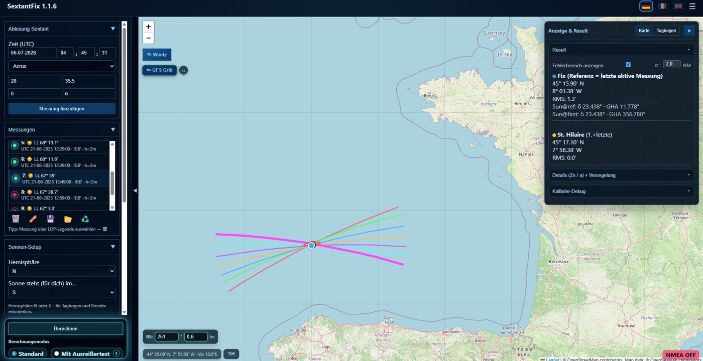
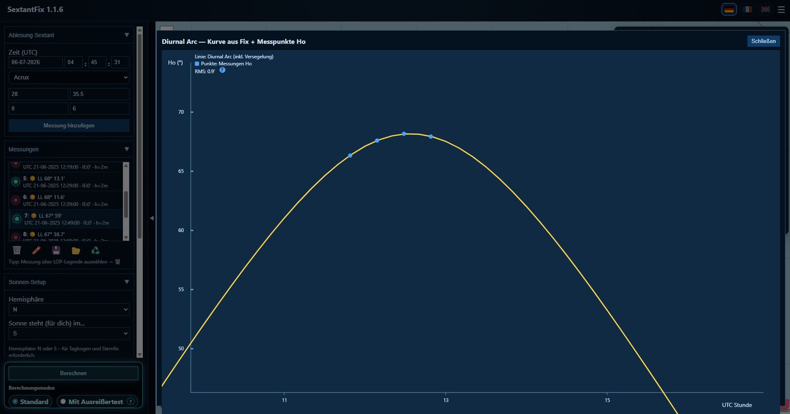
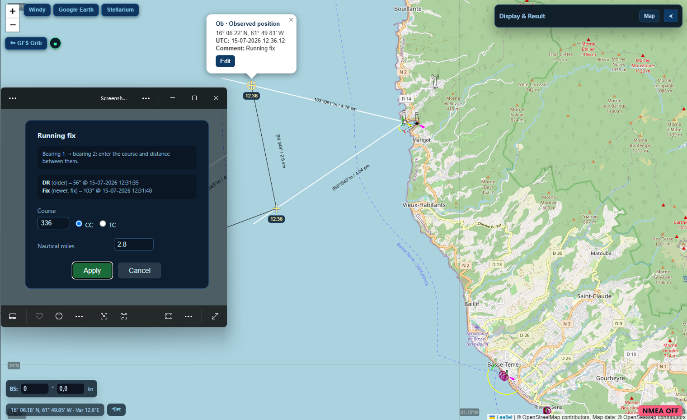
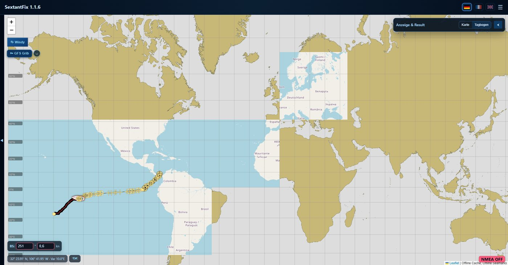
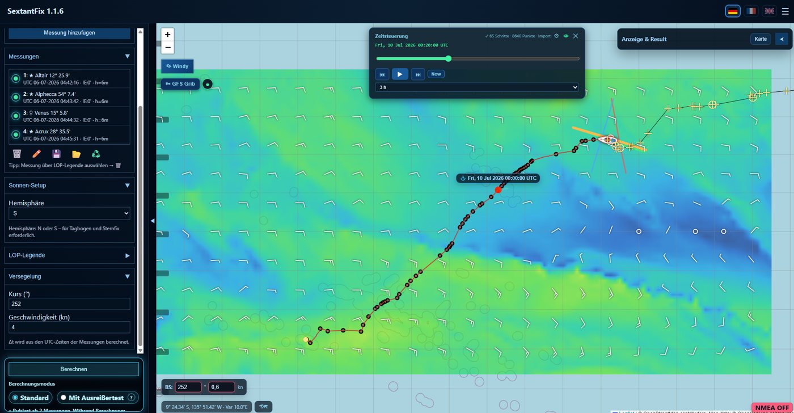
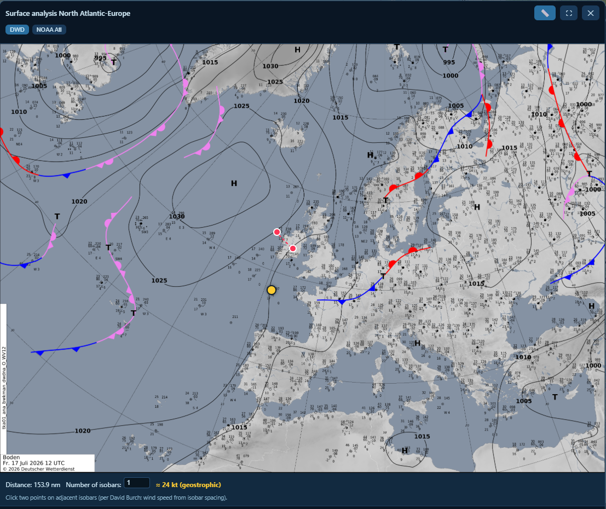
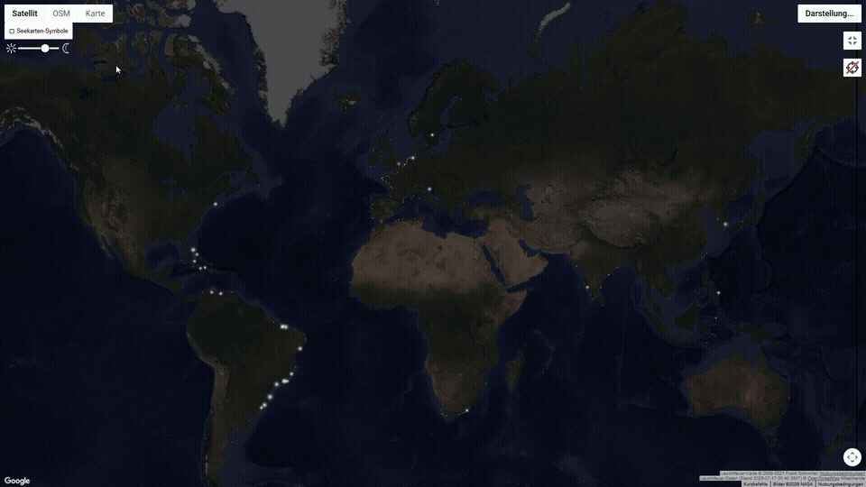
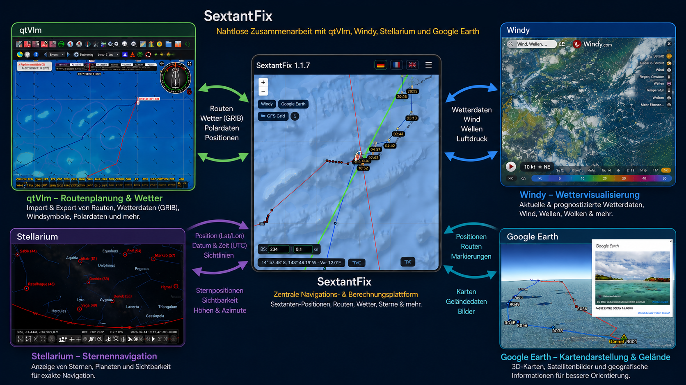

Klicken zum Schließen
Bestimme deinen Standort aus der Beobachtung von Sonne, Planeten und Sternen — ganz ohne GPS. SextantFix übernimmt die Rechenarbeit hinter dem Tagbogenverfahren und der St.-Hilaire-Methode.
Das Prinzip der Astronavigation ist Jahrhunderte alt. SextantFix nimmt dir nur die mühsame Handrechnung ab — den Rest machst du selbst.
Miss die Höhe eines Sterns, der Sonne oder eines Planeten mit dem Sextanten — oder im Simulator.
SextantFix reduziert die Beobachtung per Tagbogenverfahren oder St.-Hilaire-Methode zu einer Standlinie auf der Karte.
Zwei oder mehr Standlinien schneiden sich. Der Schnittpunkt ist dein Schiffsort — bestimmt allein aus dem Himmel.
Das von Ralf Lampalzer entwickelte Verfahren, direkt integriert — dazu die klassische St.-Hilaire-Methode.
Präzise Ephemeriden über Skyfield: Stundenwinkel, Deklination, Refraktion und Präzession korrekt berechnet.
Küstenlinien und Kartenkacheln lokal gespeichert — volle Funktion auch ohne Internet auf See.
Wetterdaten laden und über der Karte darstellen — Wind und mehr, mit Zeitschieber.
Standlinien und Marken setzen, als CSV exportieren und GPX-Routen einlesen.
Vollständig auf Deutsch, Englisch und Französisch — Oberfläche und Meldungen.
Screenshots folgen — hier entsteht eine Übersicht der wichtigsten Ansichten.

Beobachtungen als Standlinien auf der Seekarte, mit Schnittpunkt.

Der Tagesbogen der Sonne, berechnet aus den Messungen — Basis des Tagbogenverfahrens.

Peilungen zu Landmarken und Leuchttürmen — inklusive Versegelungspeilung für die klassische Standortbestimmung unterwegs.

Küstenlinien und Kacheln, gespeichert für den Einsatz ohne Netz.

Windfelder über der Karte, mit Zeitschieber.

Analysierte Bodenwetterkarten (DWD, NOAA) mit Bootsposition — inklusive Windmessung aus Isobaren-Abstand nach David Burch.

Direkter Sprung zur Leuchtfeuer-Datenbank von Frank Schmirler, mit aktueller Position und Zoomstufe.

Position aus Sextantenmessungen zu bestimmen, ist keine neue Idee — das können andere Programme längst auch, manche schlanker, manche direkt in volle Navigationssuiten wie OpenCPN eingebaut. Der Unterschied bei SextantFix liegt in der Methode: Statt Standlinien zu schneiden, was bei zu geringem Sonnenlauf unzuverlässig wird, passt SextantFix die Messungen direkt an die tatsächliche Sonnenbahn an — den Tagbogen. Das liefert oft schon innerhalb einer Stunde einen brauchbaren Fix, häufig mit weniger Messungen als die klassische Methode braucht. Ausreißer werden dabei automatisch erkannt und schwächer gewichtet, statt pauschal übernommen oder von Hand verworfen zu werden. Terrestrische Peilungen und Versegelung laufen nach demselben Prinzip, auf derselben Karte.
qtVlm plant Routen und Wetter hervorragend — hat aber keine Astronavigation an Bord. Genau diese Lücke füllt SextantFix und gibt die Position direkt an qtVlm zurück, dazu Shortcuts zu Windy, Google Earth, Stellarium, Leuchtfeuer online und aktuellen Wetterkarten. Was SextantFix bewusst nicht macht: eigene Routenplanung — dafür ist qtVlm da.
SextantFix ist kostenlos. Lade den Installer für Windows — die Installation erledigt den Rest.
Für Windows herunterladen Tutorials ansehen